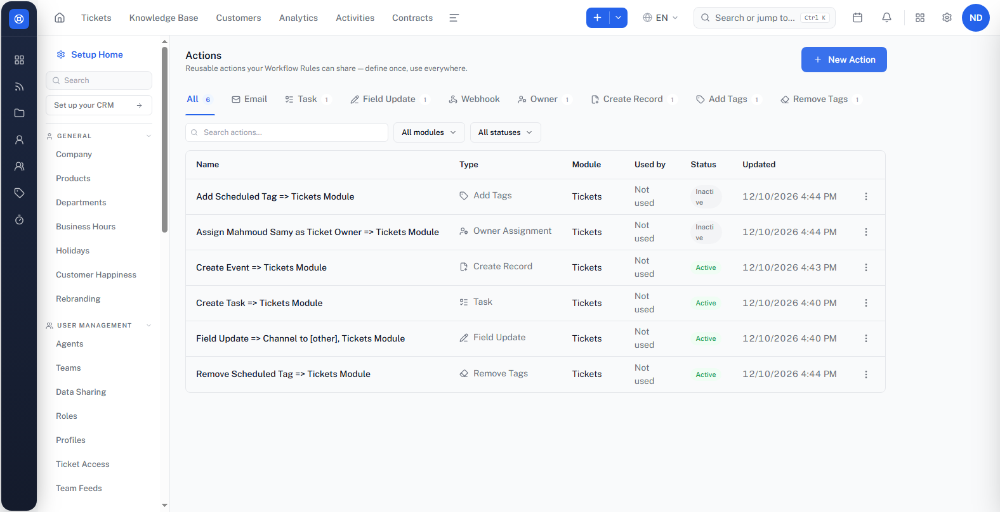
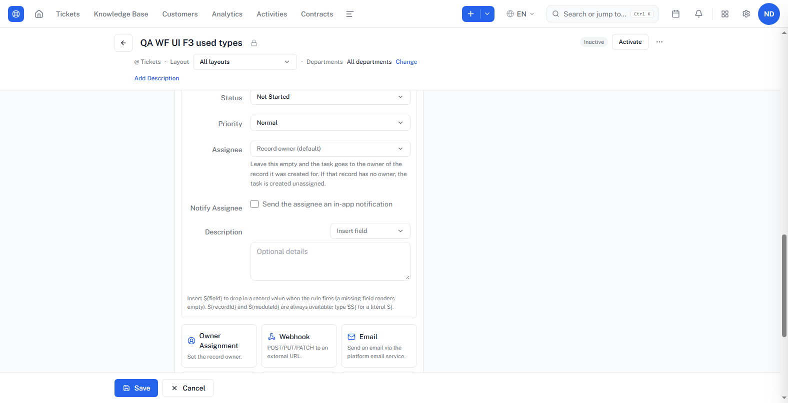
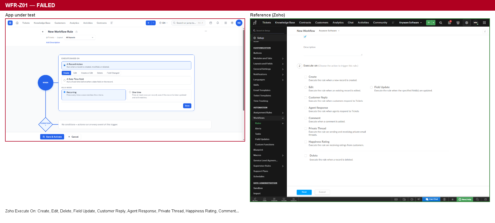
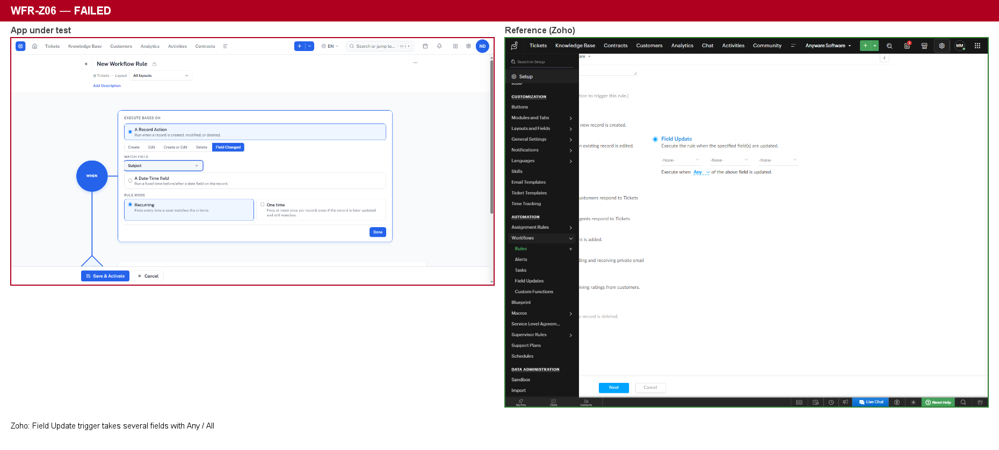
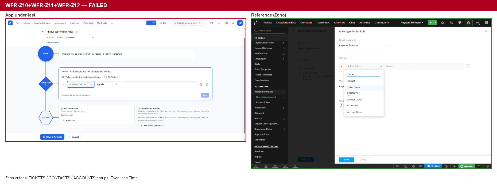
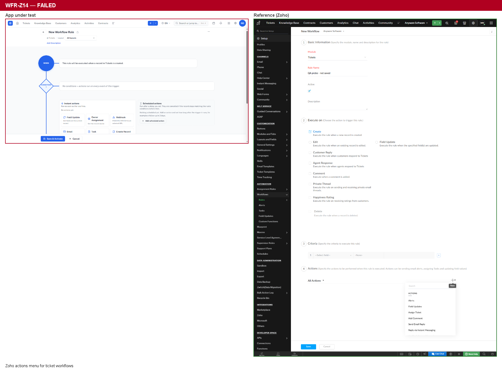
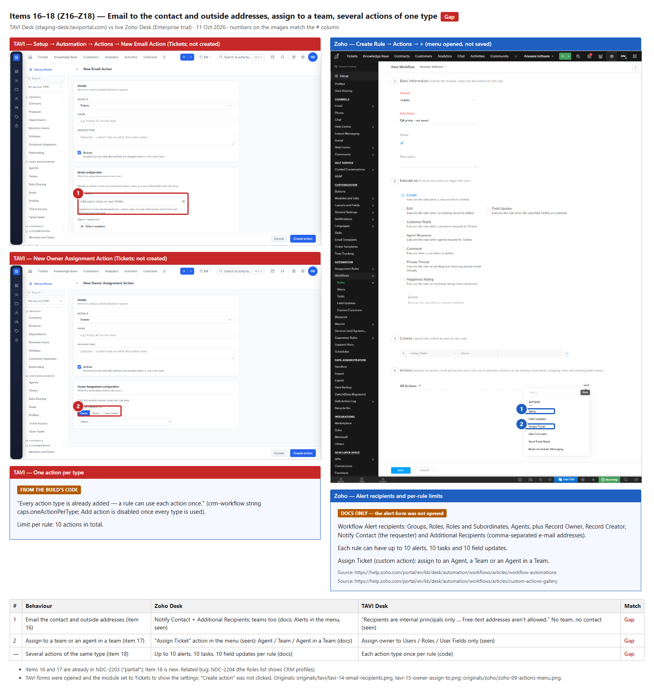
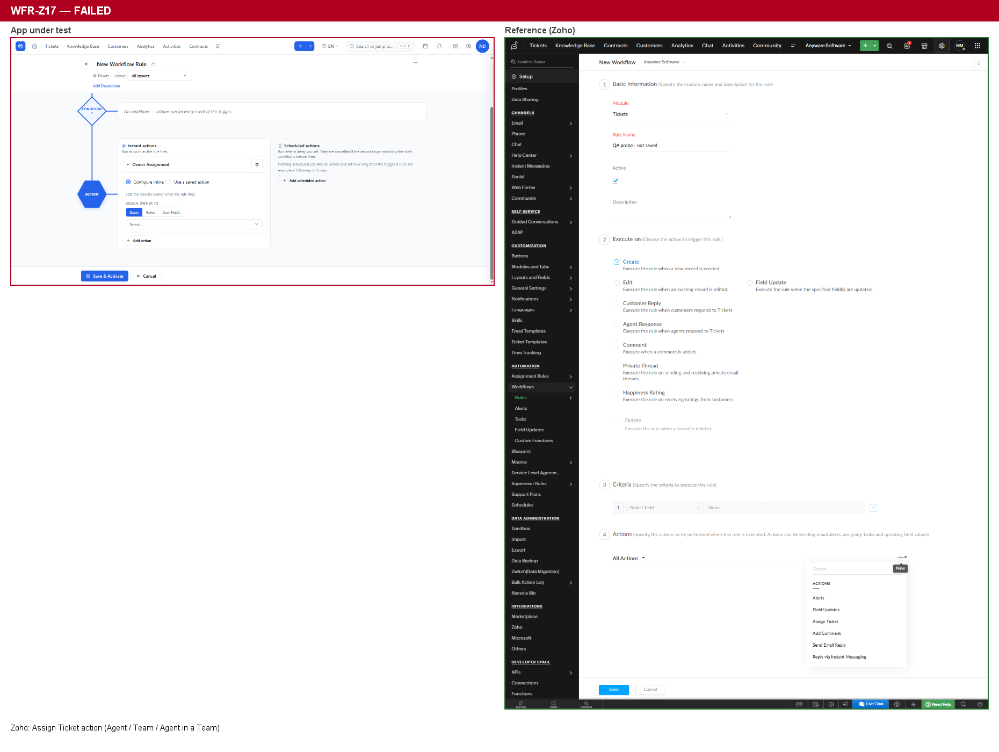
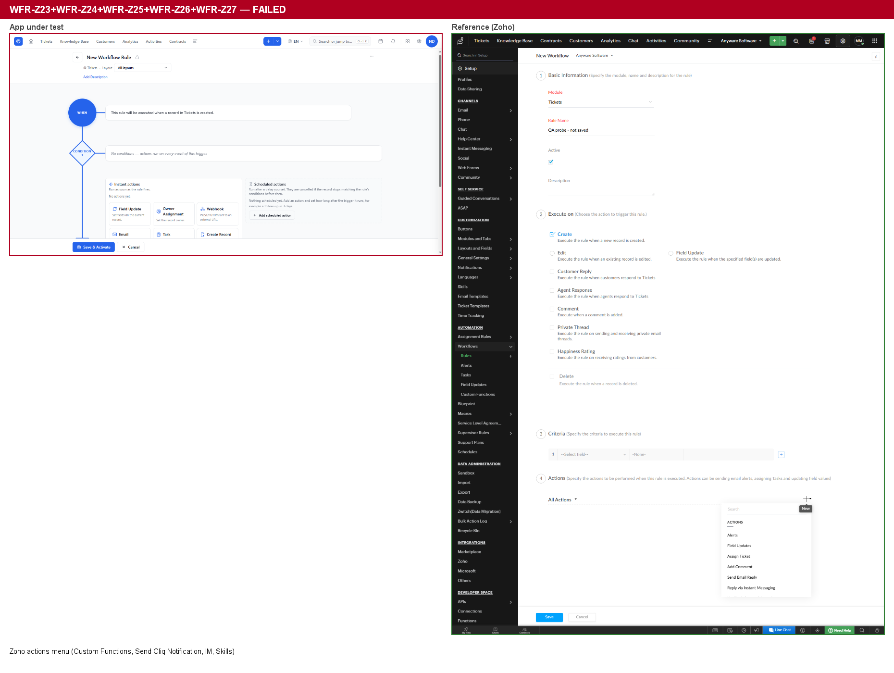

Results of the automated run of the Workflow Rules test spec on staging, compared with Zoho Desk. Every automated case has now run. Nothing here is filed in Plane yet.
Host staging-desk.taviportal.comAccount ownerBrowser Edge 154Result 85 passed · 9 app bugs · 12 known gaps vs Zoho · 5 cases wait for a settings OK
9 bugs5 earlier bugs look fixed5 suspected bugs cleared2 gaps now built
New bugs
B-1 · WFR-API-T3High
Creating a ticket fails with a server error when "kind" is not the first key of a field value
The records API depends on the order of keys inside each field value. If "kind" comes after "value", ticket creation answers 500 instead of creating the ticket. JSON key order must not matter, and many client libraries don't keep key order, so integrations see what looks like random 500s. Reproduced 3 times on 12 and 13 Oct.
Endpoint
POST /api/v1/modules/{tickets}/records, header x-app-key: desk
Trace ids
1a8142a0-…, 2cb19344-…, 5a4ce6fa-…, be6c6962-…
Send a ticket create with subject, department, email, status and priority.
{"field": "subject",
"value": {"kind": "string",
"value": "QA WF API T3"}}
→ 201 Created
Expected
201 for both bodies. If a body really is invalid, a 400 with a message, never a 500.
Actual
500 every time "kind" is not the first key.
B-2 · WFR-F7Medium
A workflow rule can be saved with a Field Update on the read-only "Created By" field
The server refuses Field Update actions on read-only system fields such as Ticket Number, Created Time and Approval Status, but it accepts one on created_by. A rule could then overwrite who created a ticket. This is the same family as CRM bug NDC-1437.
POST /api/v1/workflow/rules: an On Create rule on Tickets with one Field Update action, field created_by, value "1".
Repeat with ticket_number, created_time and approval_status.
Expected
All four are refused with a 4xx that names the read-only field.
Actual
created_by is accepted and the rule is saved; the other three are refused.
Not checked
Whether running the rule really changes the creator.
B-3 · WFR-K2Medium
The Actions library cannot create a "Send happiness email" action
The rule editor offers "Send happiness email" as an inline action, but the reusable Actions library has no such type. A happiness email therefore can't be defined once and shared between rules like the other action types.
Open Setup › Automation › Actions (/settings/automation/actions).
Look at the type tabs, then click New Action.
Compare with the action picker in a Ticket workflow rule.
Expected
Every action type the rule editor offers can also be saved in the library.
Actual
The types stop at Remove Tags; there's no "Send happiness email".

TAVI only: the library's type tabs. Zoho has no shared action library to compare with.
B-4 · WFR-I14Low
A webhook rejected with HTTP 404 is shown as "cancelled" instead of "failed"
When the receiving server answers 404, the engine correctly makes one attempt and does not retry. But the dispatch is stored as cancelled and responseStatus is empty, although lastError says "http 404". In Execution History a rejected webhook therefore looks as if someone cancelled it.
An On Create rule with a Webhook action (POST) to a receiver that always answers 404.
Create a ticket that matches the rule.
Open the rule's execution for that ticket and look at the webhook dispatch.
Expected
Status failed, response status 404, 1 attempt.
Actual
Status cancelled, response status empty, lastError: "http 404", 1 attempt.
B-5 · WFR-F3Low
The action picker offers Task and Add Tags again after the rule already has them
A rule allows one action of each type. In a rule that already has Field Update, Add Tags and Task, the Add action picker hides Field Update but still offers Task and Add Tags. Picking one leads to a rule that can't be saved.
Open a Ticket rule that has Field Update, Add Tags and Task actions.
Click Add action and look at the offered types.
Expected
Types the rule already uses are not offered, as for Field Update.
Actual
Task and Add Tags are offered again.

TAVI only: the rule's Task form is open, and the picker below starts at Owner Assignment, so Field Update is hidden but Task is offered again. Zoho allows several actions of one type, so it isn't comparable.
B-6 · WFR-M1Low
No menu link to Execution History
The Execution History page exists and works, but nothing in the app leads to it. With the Setup menu fully loaded, the AUTOMATION section lists Workflow Rules, Actions, SLA & Escalation, Support Plans, Assignment Rules, Macros, AI Tagging, Ticket Archiving and Time Tracking. The rules list and the rule editor don't link to it either. An admin can only reach it by typing the address.
Page
/settings/workflow-executions (route found in the app's code)
Expected
An "Execution History" entry under Setup › Automation, or a link from the rules list.
Actual
No entry or link anywhere.
B-7 · WFR-J7Low
A scheduled action cancelled because the ticket stopped matching leaves no trace in Execution History
The editor says scheduled actions "are cancelled if the record stops matching the rule's conditions before then". The cancelling works, but Execution History never shows it. It also doesn't show the action as scheduled while it waits, so an admin can't tell what is pending or what was cancelled.
An On Create rule, condition Priority is High, with a Webhook action scheduled 3 minutes after the trigger.
Create two matching tickets (Priority High).
Within the 3 minutes, change one ticket's Priority to Low. Leave the other as it is.
After the delay, open each ticket's execution for the rule.
Ticket kept High
The webhook arrived after 3 minutes; the dispatch shows succeeded, response 200.
Ticket changed to Low
No webhook arrived (correct), but its execution has no dispatch at all, neither "scheduled" before nor "cancelled" after.
Expected
A dispatch that shows the action as scheduled, then as cancelled with the reason.
Same blind spot
An inactive saved action is skipped correctly (WFR-I32), but its execution only says "Fired" and doesn't mention the skipped action.
B-8 · WFR-I25Medium
Workflow "Create Record" skips required fields and creates a record with no owner
On Calls, Name, Subject and Call Start Time are required. The rule editor says "required fields can't be empty", but the API saves a Create Record action that maps only Call Start Time, and when the rule runs, the engine creates the Call anyway. The new Call has no Name, no Subject and no owner, yet it is marked valid and the dispatch reports success.
POST /api/v1/workflow/rules: an On Create rule on Tickets with a Create Record action, target module Calls, mapping only call_start_time.
Create a ticket that matches the rule.
Read the rule's execution and the created Call.
Expected
The rule is refused on save with a message naming the missing required fields, or the action fails at run time with that reason.
Actual
Saved (201). At run time, dispatch succeeded (201), and a Call is created with only call_start_time, compliance_state: valid, owner_user_id: 00000000-0000-0000-0000-000000000000.
B-9 · WFR-I8Medium
Owner Assignment by role (round robin) does not assign anyone
A rule that assigns the owner by role silently does nothing. The rule shows as fired, but the ticket keeps its default owner and the execution has no dispatch and no error.
The Desk role CEO has 7 active users; 4 of them are agents in the ticket's department (Tech). The account creating the tickets is not in the role.
An On Create rule with Owner Assignment › Roles › CEO (round robin).
Create 3 matching tickets in Tech.
Expected
Each ticket gets a CEO-role user as owner, rotating between them.
Actual
All 3 tickets keep the creator as owner (the same default owner as a ticket with no rule). Execution: Fired, criteria matched, no dispatch, no error.
Earlier tickets, retested
Ticket
Problem
Today
How we know
NDC-2204
Owner Assignment › Roles listed CRM profiles
Looks fixed
Owner Assignment now has separate tabs: Roles lists the Desk roles CEO and Manager, and a new Profiles tab lists the 5 Desk profiles (Desk Administrator, Supervisor, Agent, Light Agent, Reviewer).
NDC-2205
On Edit and Field Changed rules fire on create
Looks fixed
H3: an On Edit rule did not run on create and ran once on edit. H4: a Field Changed rule did not run on create. Both used a control rule.
NDC-2206
A Date-Time rule cannot be saved (500)
Looks fixed
J2, D7 and WFR-020: Date-Time rules save (through the API and the editor) and fire on time. They accept only async actions such as Webhook, Task, Email and Create Record; the editor hides the others, and the API refuses them with a clear 400.
NDC-2173
Long names break the Name column
Looks fixed
B6 passed.
NDC-2203
Features Zoho has and TAVI lacks
Still open
Rules per department and the Active / Inactive tabs are now built. The rest are still missing (see below).
Suspected bugs that turned out fine
Add Tags "Add to existing tags" / "Replace existing tags" work correctly (I26). "Add to existing tags" kept tag B and added A; "Replace existing tags" left only C. The first failure was in our test: it put the starting tags in the ticket-create body, which doesn't save tags. The app sets them through POST /desk/tickets/{id}/tags.
One Execution History row per run (H19). The duplicate rows seen earlier did not come back.
The Execution History page loads (M2). It renders a few seconds after it opens; the earlier blank screenshots were taken too early.
A Field Changed rule can't be saved without a watch field (D2). The editor now pre-selects one.
Date-only and address Field Updates are correct in Desk (I3, I4). A date-only field stores just the date, and changing one address part keeps the others. The CRM bugs NDC-1438 and NDC-1436 do not appear here. Tested on a temporary QA layout and fields, deleted afterwards; the Standard layout was never changed.
Rule engine behaviour checked and correct: rules run in list order; layout scope; bulk edit runs Edit rules once per ticket; no edit loops; a workflow's own update is not an edit; On Delete sends the deleted ticket's values; date rules fire on time and reschedule when the date moves; deleting or deactivating the rule, or deleting the ticket, cancels queued actions.
"Ticket without department gives 500" and "ticket create 500 in Customer Support" were both bug B-1.
Email service: the workflow Email action to an agent succeeded on the first attempt. Inbox delivery was not checked.
Webhooks: POST and PUT arrive with merge fields filled in. A 500 is retried, a slow receiver is not reported as succeeded, a scheduled webhook runs after its delay, and a failing webhook does not stop the rule's other actions.
Still missing compared with Zoho (NDC-2203)
These are gaps, not bugs. Each image shows TAVI on the left and Zoho Desk on the right.
Gap
Today
Customer Reply, Agent Response, Private Thread, Happiness Rating and Comment triggers; several events in one rule
Missing
Field Update trigger on several fields (Any / All)
Missing Watch field is single-select
Rules per department
Built Departments column and filter on the list, and "Departments … Change" in the editor
Active / Inactive tabs on the rules list
Built
Contact and account fields, business hours and holidays in conditions
Missing
Ticket fields in conditions
Partly Closed Time, Ticket Number, Spam and Skills are now offered
Add Comment and Send Email Reply actions
Missing
Email to the contact or to outside addresses
Missing "Free-text addresses aren't allowed."
Assign to a team
Missing Users, Roles, Profiles and User Fields only
Custom functions, chat and instant-messaging, skills and AI actions
Missing
Show the 7 side-by-side screenshots

Triggers: Zoho's Execute On has Customer Reply, Agent Response, Comment, Private Thread and Happiness Rating.

Field Update trigger: Zoho watches up to 3 fields with Any / All.

Condition fields: Zoho adds contact, account and execution-time fields.

Actions: Zoho has Add Comment and Send Email Reply.

Email recipients, assign to team, and several actions of one type.

Owner assignment: Zoho assigns to an agent, a team, or an agent in a team.

Custom functions, chat, instant messaging, skills and AI actions.